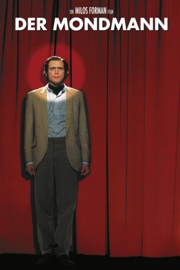

#7006 Der Mondmann
Alternativ: Man on the Moon
Auszeichnungen: 1 GoldenGlobes gewonnen
 
 IMDB-Wertung: 7.4 / 10
IMDB-Wertung: 7.4 / 10  Metascore: 0
Metascore: 0 
Der oscargekrönte Regisseur Milos Forman verfilmt mit Jim Carry in der Titelrolle das Leben des exzentrischen Künstlers Andy Kaufmann, der als mittelprächtiger Elvis-Imitator seine Karriere begann, und sich zu einem Star-Komiker mauserte, für den keine Regeln galten.
Jahr: 1999
Dauer: 113 Minuten
FSK: 12
Land: England Studio: Concorde FilmverleihTonspuren: DD5.1 - ,
Untertitel:
Auflösung: 1080p (1920x816) Größe: 8407 MB
Genre: Drama, Komödie, Biographie
Regisseur:  Milos Forman
Milos Forman
Drehbuch: Scott Alexander
Soundtrack:
Darsteller:
 Jim Carrey als Andy Kaufman
Jim Carrey als Andy Kaufman Gerry Becker als Stanley Kaufman - Andy's Father
Gerry Becker als Stanley Kaufman - Andy's Father- Greyson Erik Pendry als Little Michael Kaufman
- Bobby Boriello als Little Andy Kaufman
- George Shapiro als Mr. Besserman
 Danny DeVito als George Shapiro
Danny DeVito als George Shapiro- Budd Friedman als Budd Friedman
- Tom Dreesen als Wiseass Comic
- Matt Price als Meditation Student
 Christina Cabot als Meditation Student
Christina Cabot als Meditation Student Richard Belzer als Richard Belzer
Richard Belzer als Richard Belzer- Melanie Vesey als Carol Kaufman
 Michael Kelly als Michael Kaufman
Michael Kelly als Michael Kaufman- Miles Chapin als SNL Assistant
 Vincent Schiavelli als Maynard Smith - ABC Executive
Vincent Schiavelli als Maynard Smith - ABC Executive- Molly Schaffer als Maynard Smith's Assistant
 Greg Travis als ABC Executive
Greg Travis als ABC Executive Maureen Mueller als ABC Executive
Maureen Mueller als ABC Executive Paul Giamatti als Bob Zmuda
Paul Giamatti als Bob Zmuda- Peter Bonerz als Ed. Weinberger - 'Taxi' Producer
 Brent Briscoe als Heavyset Technician
Brent Briscoe als Heavyset Technician Patton Oswalt als Blue Collar Guy
Patton Oswalt als Blue Collar Guy Conrad Roberts als College Promoter
Conrad Roberts als College Promoter- Angela Jones als Hooker
 Gerry Robert Byrne als Taxi AD / Stage Manager
Gerry Robert Byrne als Taxi AD / Stage Manager Billy D. Lucas als Taxi Security Guard
Billy D. Lucas als Taxi Security Guard- Patricia Scanlon als Ed Weinberger's Secretary
 Reiko Aylesworth als Mimi
Reiko Aylesworth als Mimi Michael Villani als Merv Griffin
Michael Villani als Merv Griffin- Courtney Love als Lynne Margulies
- Heath Hyche als Merv's Guest Coordinator
- Jim Ross als Wrestling Commentator
- Jerry Lawler als Jerry Lawler
- Bob Zmuda als Jack Burns
 Brian Peck als Friday's Announcer
Brian Peck als Friday's Announcer- Caroline Rhea als Friday's Melanie
 Mary Lynn Rajskub als Friday's Mary
Mary Lynn Rajskub als Friday's Mary- Deana Molle' als Memphis Paramedic
- Mews Small als TM Administrator
- David Elliott als TM Administrator
 Tracey Walter als National Enquirer Editor
Tracey Walter als National Enquirer Editor David Koechner als National Enquirer Reporter
David Koechner als National Enquirer Reporter Jeanine Jackson als National Enquirer Reporter
Jeanine Jackson als National Enquirer Reporter Sydney Lassick als Crystal Healer
Sydney Lassick als Crystal Healer- Yoshi Jenkins als Jun Roxas
- Melissa Carrey als Comedy Store Waitress
 Chuck Zito als Tony Clifton Biker
Chuck Zito als Tony Clifton Biker Danielle Burgio als New York City Rockette
Danielle Burgio als New York City Rockette- Kelly Jones Gabriele als New York City Rockette
 Tara Nicole Hughes als New York City Rockette
Tara Nicole Hughes als New York City Rockette
Datei: X:\1999\Mondmann, Der (1999, FSK12, 1920x816).mkv seit 15.09.2017
Festplatte: HD 1996-2002
 Es gibt insgesamt 81 Filme in der Gruppe '1999'
Es gibt insgesamt 81 Filme in der Gruppe '1999'